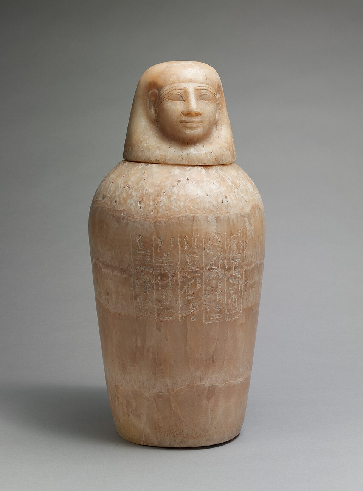

Канопы
«Четыре сосуда — четыре сына Гора» · органы, без которых умершему не обойтись

Четыре сына Гора
При мумификации из тела извлекали лёгкие, желудок, кишки и печень: их промывали, высушивали и клали в четыре сосуда. Крышками служили головы четырёх сыновей Гора — Имсет (человеческое лицо) хранил печень, Хапи (павиан) — лёгкие, Дуамутеф (шакал) — желудок, Кебехсенуф (сокол) — кишки. Целостность тела считалась условием воскресения, поэтому органы должны были остаться с хозяином — лишь в надёжном месте и под надёжной охраной.
Четыре богини
Сосуды хранили в специальном ларце — ящике для каноп, на четырёх боковых стенках которого размещались изображения богинь: Исида, Нефтида, Нейт и Селкет. Это «дочери Гора»: они охраняли органы умершего, сопровождали его в Дуате и защищали мумию от нечисти. Ящик стоял у мумии в погребальной камере — как сейф рядом с хозяином.
От пузатых к головным
Форма менялась, а число оставалось четырем. В Древнем царстве — простые пузатые сосуды с круглыми или плоскими крышками; древнейшие канопы найдены в гробнице царицы Хетепхерес (III династия). К Новому царству сосуды вытянулись, приобрели высокие плечи и узкое основание, а крышки приняли «классический» вид — четыре головы сыновей Гора (XVIII династия). Традицию окончательно закрепили в эпоху Рамессидов.
Сердце и «деканопный» обычай
Сердце не уходило ни в одну кано́пу: его оставляли в теле — ему отвечать на суде, — а в скромных погребениях клали на место скарабея-заместителя. К XXI династии утвердился «деканопный» обычай: органы высушивали, бальзамировали, сворачивали в четыре льняных пакета и возвращали прямо в брюшную полость мумии — «дом» души оставался одним целым, без отдельного ларца.
Слово «канопы»
Название пришло через Грецию: Κάνωβος — город Каноп у дельты Нила, откуда в Египте везли бальзамы для сосудов. По легенде, яркая звезда Каноп была головой осла, брошенного в море: город получил имя звезды, а сосуды — имя города. Позже форму каноп заимствовали этруски — у них это уже была урна для пепла сгоревшего умершего.